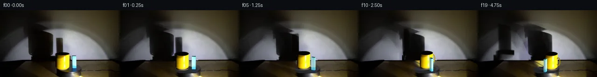

![首帧]()

Round 00
2026-11-05T04:22:11.018675+00:00像素候选变化代码 +390/−0inspection 更新
pixels 705cf50b0ecaffb7 · code 4f27a3cc97f3e5a3
查看本轮 generate.py 真实 diff
--- previous/generate.py
+++ current/generate.py
@@ -0,0 +1,390 @@
+"""Local source-image warps and a small analytic geometry rasterizer; no engine."""
+from pathlib import Path
+import math
+import numpy as np
+from PIL import Image, ImageDraw, ImageFilter
+import cv2
+from scipy.interpolate import RBFInterpolator
+from scipy.ndimage import gaussian_filter, map_coordinates
+from artifact_io import save
+
+ROOT=Path(__file__).resolve().parent
+S=4
+W,H=256,144
+WW,HH=W*S,H*S
+SRC=np.asarray(Image.open(ROOT/'first_frame.png').convert('RGB'),dtype=np.float64)
+OX,OY=146.,128.3
+K=.32
+MUG0=np.array([-12.3,-7.2])
+BLOCK0=np.array([13.2,-5.])
+RADIUS=14.1
+MH=31.7
+BH=27.7
+LIGHT=np.array([43.,55.,5.])
+WALLY=-65.
+WALLBOTTOM=108.3
+rng=np.random.default_rng(18)
+
+
+def polygon_mask(points, shape=(H,W)):
+ out=np.zeros(shape,np.uint8)
+ cv2.fillPoly(out,[np.rint(points).astype(np.int32)],255)
+ return out.astype(float)/255.
+
+
+def sample_source(x,y):
+ coords=np.array([np.asarray(y),np.asarray(x)])
+ return np.stack([map_coordinates(SRC[:,:,c],coords,order=1,mode='nearest') for c in range(3)],axis=-1)
+
+
+def rotation(a):
+ return np.array([[np.cos(a),-np.sin(a)],[np.sin(a),np.cos(a)]])
+
+
+def project(p):
+ p=np.asarray(p)
+ return np.stack([OX+p[...,0],OY+K*p[...,1]-p[...,2]],axis=-1)
+
+
+def wall_project(p):
+ p=np.asarray(p)
+ lam=(WALLY-LIGHT[1])/(p[...,1]-LIGHT[1])
+ q=LIGHT+(p-LIGHT)*lam[...,None]
+ return np.stack([OX+q[...,0],WALLBOTTOM-q[...,2]],axis=-1)
+
+
+# Mark original wall silhouettes and occluding objects. Inpaint only those areas.
+wall_remove=polygon_mask([(51,27),(70,28),(118,46),(119,55),(138,55),(139,90),(152,89),(153,96),(166,96),(166,108),(58,109),(56,98)])
+wall_remove=gaussian_filter(wall_remove,1.0)
+wall_remove[109:]=0
+wall_remove[wall_remove>.03]=1
+# Fit the existing spotlit wall using known neighboring samples. Thin-plate
+# interpolation gives smooth lighting under the shadow, rather than a flat fill.
+yy,xx=np.mgrid[:109,:W]
+known=(wall_remove[:109]<.02)
+# Exclude table seam and a few dark cast-shadow penumbra pixels at the mask edge.
+known &= yy<106
+sel=known & ((xx%3)==0) & ((yy%3)==0)
+points=np.column_stack([xx[sel]/100.,yy[sel]/100.])
+colors=SRC[:109][sel]
+interp=RBFInterpolator(points,colors,kernel='thin_plate_spline',smoothing=.004,neighbors=100)
+query=wall_remove[:109]>.005
+restored=SRC.copy()
+restored_wall=interp(np.column_stack([xx[query]/100.,yy[query]/100.]))
+restored[:109][query]=np.clip(restored_wall,0,255)
+# Soft transition at the edge of the recovered area.
+blend=gaussian_filter(wall_remove, .55)
+restored=SRC*(1-blend[...,None])+restored*blend[...,None]
+restored[108]=SRC[108]
+
+# Measured shadow alpha: separate the large mug and the narrow block shadows.
+def extract_shadow(region):
+ ratio=np.mean(SRC/(np.maximum(restored,8)),axis=2)
+ a=np.clip(1-ratio,0,.985)*region
+ return gaussian_filter(a,.38)
+
+mug_reg=polygon_mask([(52,28),(68,27),(116,45),(118,98),(120,108),(62,108),(58,98)])
+block_reg=polygon_mask([(118,56),(137,57),(138,108),(116,108)])
… diff truncated; 303 more lines …